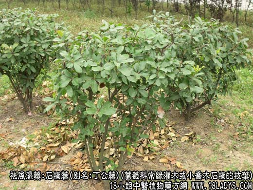
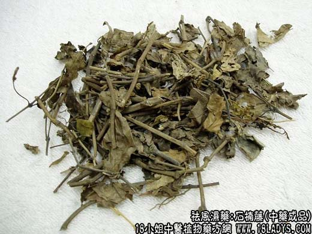
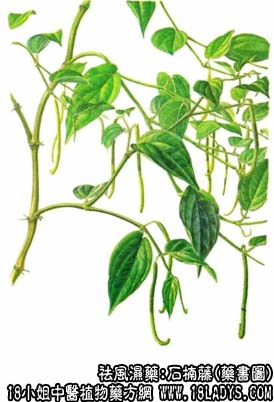

石楠藤为少常用中药，始载宋《开宝本草》。
别名：爬岩香、丁公寄、丁公藤、石南藤。
来源：蔷薇科常绿灌木或小乔木石楠的枝叶。
产地：江苏、浙江。
性状鉴别：茎圆柱形，有分枝，长约30厘米，直径0.4~1厘米，枝顶端具叶。表面灰棕色，有腊样光泽，具纵皱纹，有多数半月形叶痕。质硬易折断，断面皮部薄，易剥落，木部黄白色，气微味淡 。
以嫩枝、条匀、外皮灰棕色者为佳。
主要成分：野樱皮甙、又含游离的氢氰酸。
功效与作用：1、祛风、舒筋活络。从临床观察，有利尿作用。
2、健胃。
炮制：切片，生用。
性味：辛苦平。
归经：入肾经。
功能：壮筋骨，去风湿。
主治：腰腿疼痛，软弱无力。
临床应用：1、用于治风湿性关节炎，以慢性而偏于寒、有腰膝疼痛、下肢无力者较适宜，常配其它祛风湿药和补益药，方如石楠藤汤。
3、用于治小儿疳积腹胀，取其有健胃作用，常配黄连、鸡内金、陈皮等同服。
用量：9~15g，大剂可用至30g。
处方举例：石楠藤汤：石楠藤15g，海桐皮30g，五加皮9g，骨碎补12g， 续断15g，当归9g，杜仲12g，水煎服 。